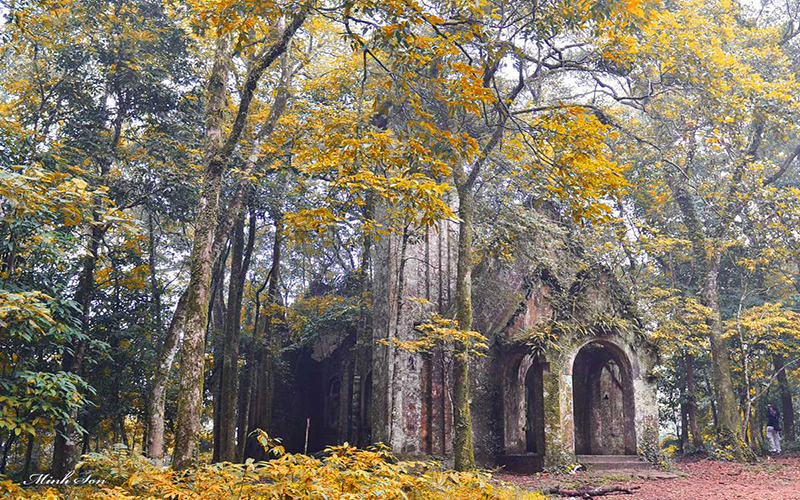

Cửa ngõ thủ đô
Hà Tây là một tỉnh cũ Việt Nam, thuộc vùng đồng bằng sông Hồng, đã từng tồn tại trong hai giai đoạn: 1965-1975 và 1991-2008. Tỉnh nằm bên bờ phải (bờ Nam) sông Hồng và bờ trái (bờ Đông) sông Đà. Trung tâm hành chính của tỉnh là thành phố Hà Đông nằm cách trung tâm thủ đô Hà Nội cũ 10 km về phía tây nam, cách sân bay quốc tế Nội Bài 35 km. Trước tháng 8 năm 2008, Hà Tây có địa giới phía đông giáp thủ đô Hà Nội cũ, phía đông-nam giáp tỉnh Hưng Yên, phía nam giáp tỉnh Nam Hà, phía tây giáp tỉnh Hòa Bình, phía bắc giáp hai tỉnh Vĩnh Phúc và Phú Thọ. Từ ngày 1 tháng 8 năm 2008, toàn bộ địa giới của Hà Tây được sáp nhập vào Thủ đô Hà Nội, và như vậy tỉnh này không còn tồn tại nữa...
Hà Tây có khoảng 2,47 triệu người với mật độ dân số 1,126 người/km² (2003).
Tỷ trọng nông - lâm nghiệp: 36% Công nghiệp, xây dựng: 30% Dịch vụ là: 34%.
Hà Tây có trên 200 làng nghề với những sản phẩm đặc sắc và được nhiều người ưa chuộng như pháo Bình Đà, lụa Vạn Phúc, sơn mài - Duyên Thái, tiện gỗ - Nhị Khê, thêu - Quất Động, nón Chuông, quạt Vác, khảm trai Chuyên Mỹ, hàng mây tre Phú Vinh, đồ mộc Chàng Sơn, Sơn Đồng, may Trạch Xá, đàn Đào Xá, mộc Đại Nghiệp, tơ lưới Hà Thao, tò he Xuân La...
Bài hát Hà Tây quê lụa của Nhật Lai ra đời khi Không quân Hoa Kỳ tăng cường đánh phá miền Bắc Việt Nam với ca từ đẹp, giai điệu mượt mà đã trở nên nổi tiếng.
Lễ hội chùa Hương (huyện Mỹ Đức) - một lễ hội dài nhất và vui nhất Việt Nam (3 tháng, bắt đầu từ tháng 1 đến tháng 3 âm lịch) thu hút khoảng nửa triệu khách mỗi năm.
Hà Tây là tỉnh giàu tiềm năng du lịch. Với địa hình giao thoa giữa miền núi và đồng bằng, Hà Tây có nhiều hồ, suối và hang động. Hà Tây là tỉnh có 2 trong số 21 khu du lịch quốc gia đó là Chùa Hương và Khu du lịch Ba Vì. Về số di tích lịch sử được công nhận Hà Tây chỉ đứng sau Hà Nội và thành phố Hồ Chí Minh. Các địa chỉ du lịch có: Di tích quốc gia Đền Nội - Đình Ngoại Bình Đà thờ Đức Quốc tổ Lạc Long Quân, Vườn quốc gia Ba Vì, ao Vua, Khoang xanh, suối Hai, Đồng Mô, Thiên Sơn - Suối Ngà (suối Ổi), Suối Ngọc - Vua Bà, Bằng Tạ, Đầm Long, hồ Quan Sơn, Đồng Xương, Văn Sơn, làng cổ Đường Lâm, lăng Ngô Quyền, lăng Phùng Hưng, thành cổ Sơn Tây, lễ hội Chử Đồng Tử (ngày 30/3 - 1/4 (âm lịch) hàng năm, tại xã Tự Nhiên, Thường Tín, Hà Tây).....
Bài viết nói về tỉnh Hà Tây ( Cũ ) mọi thông tin được cập nhật từ trước khi sáp nhập vào Tp Hà Nội
 Xem thêm về Chùa Thầy >>>
Xem thêm về Chùa Thầy >>>
Cùng với chùa Tây Phương và Chùa Hương, Chùa Thầy là một trong những ngôi chùa nổi tiếng nhất Hà Nội. Nếu như Chùa Láng gắn liền với giai đoạn đầu của cuộc đời Từ Đạo Hạnh, thì chùa Thầy lại chứng kiến quãng đời sau cùng cho đến ngày thoát xác của vị sư thế hệ thứ 12 thuộc dòng Thiền Ti-ni-đa-lưu-chi này. Ban đầu chùa Thầy chỉ là một am nhỏ gọi là Hương Hải am, nơi Thiền sư Từ Đạo Hạnh trụ trì. Vua Lý Nhân Tông đã cho xây dựng lại gồm hai cụm chùa: chùa Cao (Đỉnh Sơn Tự) trên núi và chùa Dưới (tức chùa Cả, tên chữ là Thiên Phúc Tự). Đầu thế kỷ 17, Dĩnh Quận Công cùng hoàng tộc chăm lo việc trùng tu, xây dựng điện Phật, điện Thánh; sau đó là nhà hậu, nhà bia, gác chuông. Theo thuyết phong thủy, chùa được xây dựng trên thế đất hình con rồng. Phía trước chùa, bên trái là ngọn Long Đẩu, lưng chùa và bên phải dựa vào núi Sài Sơn. Chùa quay mặt về hướng Nam, trước chùa, nằm giữa Sài Sơn và Long Đẩu là một hồ rộng mang tên Long Chiểu hay Long Trì (ao Rồng). Sân chùa như hàm rồng ,thủy đình như viên ngọc rồng ngậm.Cây cầu Nguyệt Tiên Kiều và Nhật Tiên Kiều như hai chiếc râu rồng.
Mọi người thường cho rằng chùa Hương có từ cuối thế kỷ 17 nhưng thực ra Chùa Hương có lịch sử từ thế kỷ 15. Ngôi chùa được xây dựng với quy mô chính vào khoảng cuối thế kỷ 17, sau đó bị hủy hoại trong kháng chiến chống pháp năm 1947, sau đó được phục dựng lại năm 1988 do Hòa thượng Thích Viên Thành dưới sự chỉ dạy của cố Hoà thượng Thích Thanh Chân. Khi xưa vua Lê Thánh Tông đi tuần thú qua đây lần thứ 2 vào tháng giêng năm Đinh hợi, niên hiệu Quang thuận thứ 8 (1467) đã đóng quân nghỉ lại ở thung lũng này và cho quân lính thổi cơm ăn, vua xem thiên văn thấy vùng này lâm vào địa phận của sao Thiên Trù, (một sao chủ về sự ăn uống và biến động) nên nhân đấy đặt tên là chùa Thiên Trù. Ba vị Hòa thượng đời vua Lê Thánh Tông 1442 – 1497 đã tìm thấy động Hương Tích và dựng lên thảo am Thiên Trù. Kể từ đó động Hương Tích được gọi là chùa trong, Thiên Trù gọi là chùa ngoài, rồi người ta lấy tên chung cho hai nơi và cả khu vực là chùa Hương hay “Hương Thiên Bảo Sái”. Sau thời kỳ ba vị Hòa thượng khai sáng, chùa Thiên Trù chùa Hương gián đoạn trụ trì, mãi tới niên hiệu Chính Hòa năm thứ bẩy 1686 của thời vua Lê Trung Hưng. Hòa thượng Trần Đạo Viên Quang, (tương truyền cũng là một quan chức trong triều đình đã treo ấn từ quan để đi tu) mới lại tiếp tục công việc tạo dựng.
 Xem thêm về Làng Cổ Đường Lâm >>>
Xem thêm về Làng Cổ Đường Lâm >>>
Đường Lâm trở thành làng cổ đầu tiên ở Việt Nam được Nhà nước trao bằng Di tích lịch sử văn hóa quốc gia ngày 19 tháng 5 năm 2006. Đây là quê hương nhiều danh nhân như bà Man Thiện (mẹ của hai Bà Trưng), Bố Cái Đại vương Phùng Hưng, vua Ngô Quyền, Thám hoa Giang Văn Minh, bà chúa Mía (người xây chùa Mía, vương phi của chúa Trịnh Tráng), Phan Kế Toại, Hà Kế Tấn, Kiều Mậu Hãn, Phan Kế An,... Đường Lâm còn được gọi là đất hai vua do là nơi sinh ra Phùng Hưng và Ngô Quyền. Tuy thường được gọi là làng cổ nhưng thực ra Đường Lâm từ xưa gồm 9 làng thuộc tổng Cam Giá Thịnh huyện Phúc Thọ trấn Sơn Tây,[4] trong đó 5 làng Mông Phụ, Đông Sàng, Cam Thịnh, Đoài Giáp và Cam Lâm liền kề nhau. Các làng này gắn kết với nhau thành một thể thống nhất với phong tục, tập quán, và tín ngưỡng hàng ngàn năm nay không hề thay đổi. Đầu thế kỷ 19, Đường Lâm là nơi đặt lỵ sở của trấn Sơn Tây.
Vườn quốc gia Ba Vì nằm trên khu vực dãy núi Ba Vì thuộc huyện Ba Vì, thành phố Hà Nội[2] và thành phố Hòa Bình, tỉnh Hòa Bình với diện tích 10.814,6 ha[1][3], cách Sơn Tây, Hà Nội 15 km và cách trung tâm Hà Nội 50 km về phía tây. Từ đầu thế kỉ 20, Ba Vì đã là địa danh nổi tiếng nhờ sự đa dạng của các hệ sinh thái và có phong cảnh đẹp, khí hậu mát mẻ. Vườn quốc gia này nằm trong dãy núi cao chạy dọc theo hướng đông bắc-tây nam với đỉnh Vua cao 1.296 m, đỉnh Tản Viên cao 1.227m, đỉnh Ngọc Hoa cao 1.131 m.